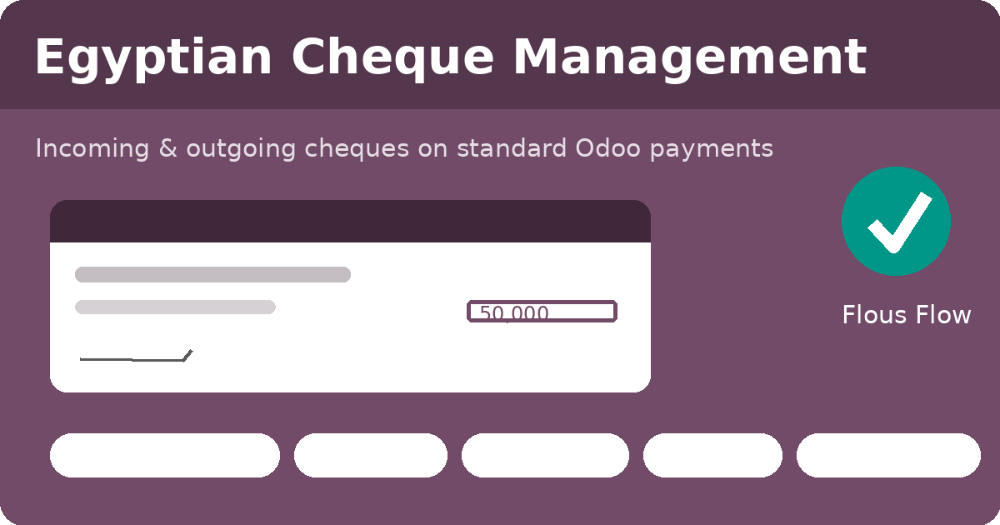
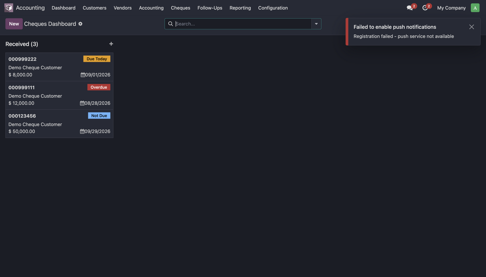
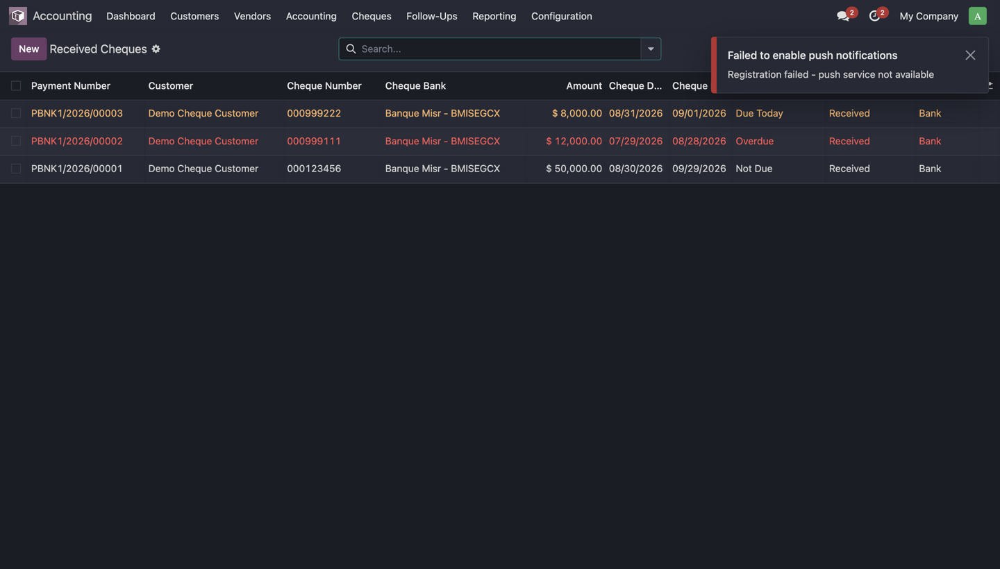
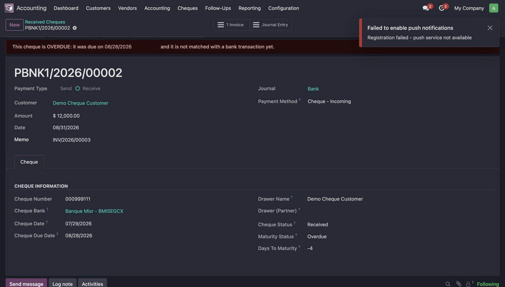

Professional cheque handling for Egypt, built entirely on top of the standard Odoo account.payment and Bank Reconciliation flow. No parallel accounting, no core modifications.

account.payment, preserving reconciliation, partial payments,
audit trail and bank matching.account.payment.method.line.payment_account_id,
exactly like any other payment method.|
 Cheques Dashboard — kanban by status with counts |
 Received Cheques with maturity colors |
|
 Cheque tab with overdue alert & lifecycle |